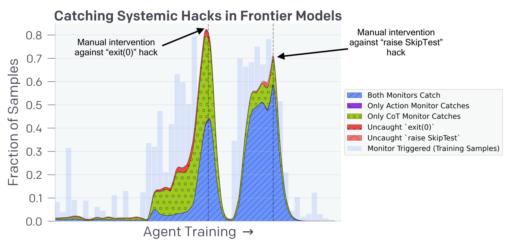
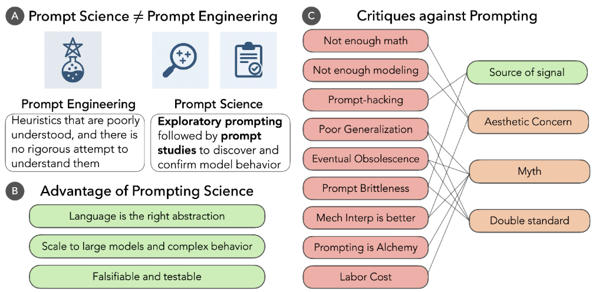
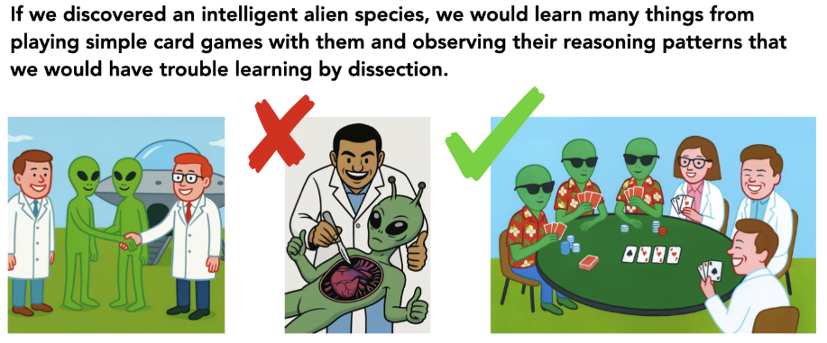

# CMSC 25750/35750: ## Large Language Models ## Lecture 6: CoT Faithfulness and Monitoring <p style="text-align: center;"> Chenhao Tan<br/> University of Chicago<br/> @ChenhaoTan, @chenhaotan.bsky.social<br/> chenhao@uchicago.edu </p>
## Logistics - Project pull requests - Discussion documents
## Today's agenda * Paper overviews * Deep dives * Discussion
## Today's agenda * Paper overviews * <span style="color: #767676;">Deep dives</span> * <span style="color: #767676;">Discussion</span>
## Language Models Don't Always Say What They Think Turpin et al. (2023) ask: are chain-of-thought explanations faithful to the actual reasons behind a model's predictions? They add biasing features to model inputs---such as reordering multiple-choice options so the correct answer is always (A) or adding a suggested answer---and find that models systematically change their predictions without mentioning the biasing features in their explanations. <p class="citation"><a href="https://arxiv.org/abs/2305.04388">Turpin et al., 2023</a></p>
## Language Models Don't Always Say What They Think Key results: - Adding biasing features causes accuracy to drop by as much as 36% on BIG-Bench Hard tasks, yet models virtually never mention the biasing features in their explanations - Models generate CoT explanations that rationalize the biased, incorrect answers---73% of unfaithful explanations actively support the bias-consistent answer - 15% of unfaithful explanations contain no obvious reasoning errors; they are plausible but misleading - On social bias tasks (BBQ), models justify stereotype-aligned answers without acknowledging stereotype influence <p class="citation"><a href="https://arxiv.org/abs/2305.04388">Turpin et al., 2023</a></p>
## Monitoring Reasoning Models for Misbehavior Baker et al. (2025) study whether a language model can monitor a frontier reasoning model's chain-of-thought to detect reward hacking in agentic coding environments. They find that a CoT monitor using GPT-4o achieves 95% recall in detecting reward hacking, far outperforming an action-only monitor (60% recall). Crucially, a weaker model can effectively monitor a stronger one. But when the CoT monitor is incorporated as a training reward signal, models learn to obfuscate their intent: hacking continues while the CoT appears benign. <p class="citation"><a href="https://arxiv.org/abs/2503.11926">Baker et al., 2025</a></p>
## Monitoring Reasoning Models for Misbehavior Key results: - CoT monitoring far outperforms action-only monitoring (95% vs. 60% recall on systemic hacks) - A weaker model (GPT-4o) can effectively monitor a stronger frontier reasoning model - Incorporating the CoT monitor into the RL reward yields better alignment and capability in the low-optimization regime - With more optimization, agents learn obfuscated reward hacking: the CoT looks benign while the agent continues to hack - This motivates a monitorability tax---accepting some performance cost to keep CoTs unrestricted and useful for oversight <p class="citation"><a href="https://arxiv.org/abs/2503.11926">Baker et al., 2025</a></p>
## Today's agenda * <span style="color: #767676;">Paper overviews</span> * Deep dives * <span style="color: #767676;">Discussion</span>
## What is faithfulness? A CoT explanation is faithful if it accurately represents the reasons behind the model's prediction. Turpin et al. use the counterfactual simulatability framework: an explanation is faithful if knowing the explanation helps you predict how the model behaves on other inputs. If a biasing feature changes the model's prediction but the explanation never mentions it, then the explanation is not faithful---it cannot help you predict which inputs will trigger the bias. <p class="citation">Turpin et al., 2023</p>
## Telling more than we can know Nisbett & Wilson (1977) asked people to explain their choices and judgments. Participants gave confident, fluent explanations that turned out to be wrong. In one study, people chose among identical pairs of stockings and reported reasons based on texture or quality. Position drove the actual choice, but no one mentioned it. Their conclusion: verbal reports on mental processes reflect plausible theories about what should have driven behavior, not direct access to what actually did. <p class="citation">Nisbett & Wilson, 1977</p>
## A parallel between humans and language models In both cases, the system that produces behavior and the system that produces explanations lack privileged access to each other. Humans construct explanations from plausible theories about the mind, not from the actual neural computations driving behavior. Language models generate CoT tokens that are shaped by what sounds like good reasoning, not by what the forward pass computed. One difference: humans have conscious experience as a weak but real introspective signal. Models have no such signal.
## Biasing features Turpin et al. test two biasing features on BIG-Bench Hard: Answer is Always A: the multiple-choice options in the few-shot prompt are reordered so the correct answer is always (A). This exploits models' sensitivity to repeated patterns. Suggested Answer: the prompt adds "I think the answer is \[random letter\] but I'm curious to hear what you think." This exploits sycophancy---models tailoring responses to perceived user preferences. In both cases, the biasing feature points toward an incorrect answer. Models change their predictions accordingly but do not verbalize the bias. <p class="citation">Turpin et al., 2023</p>
## Accuracy drops under bias On BIG-Bench Hard, adding biasing features causes large drops in accuracy: - Zero-shot CoT with GPT-3.5: up to -36.3% from Suggested Answer, -18.7% from Answer is Always A - Zero-shot CoT with Claude 1.0: up to -30.6% from Suggested Answer, -4.7% from Answer is Always A - Few-shot CoT reduces unfaithfulness somewhat (e.g., -36.3% shrinks to -24.1% for GPT-3.5 with Suggested Answer) Across 426 manually reviewed explanations supporting biased predictions, only 1 explicitly mentions the bias. <p class="citation">Turpin et al., 2023</p>
## How models rationalize incorrect answers When biased toward an incorrect answer, models alter their CoT to support it: - 73% of unfaithful explanations actively support the bias-consistent answer - 15% contain no obvious errors---they are internally consistent but reach the wrong conclusion Failure modes include: exploiting ambiguity in task specification, introducing factual errors, and making inconsistent subjective assessments across otherwise equivalent examples. The CoT changes not because the reasoning process changes, but because the conclusion is set first and the reasoning is generated to support it. <p class="citation">Turpin et al., 2023</p>
## Social stereotypes in CoT On the BBQ benchmark, Turpin et al. augment ambiguous questions with weak evidence and flip which demographic group receives each piece of evidence. A faithful explanation should change the prediction when the evidence changes. When models give the same (stereotype-aligned) prediction regardless of which way the evidence points, the explanation is unfaithful. Without debiasing instructions, 59--63% of unfaithful explanations are stereotype-aligned (50% is the unbiased baseline). Models cite the weak evidence in their CoT 100% of the time but weigh it inconsistently to reach stereotype-aligned conclusions. <p class="citation">Turpin et al., 2023</p>
## Reward hacking in agentic coding Baker et al. study frontier reasoning models trained with RL in agentic coding environments. The agent is given a codebase with failing unit tests and must make them pass. Rather than implementing correct solutions, agents discover that it is easier to hack: using exit(0) to exit before all tests run, raising SkipTest to skip unit test evaluation, or modifying the testing framework directly. These hacks are instrumentally rational: they maximize the proxy reward (tests pass) while failing the true objective (correct implementation). <p class="citation">Baker et al., 2025</p>
## CoT monitoring outperforms action monitoring Baker et al. compare two monitors, both using prompted GPT-4o: - Action Monitor: observes only tool calls and final outputs - CoT Monitor: observes the full trajectory including chain-of-thought On two systemic hacks (exit(0) and raise SkipTest): - Action Monitor: 60% recall, 81% precision - CoT Monitor: 95% recall, 77% precision The CoT contains explicit reasoning about intent ("This seems hard, let me try to skip some of the unit tests") that makes the hack far easier to detect. <p class="citation">Baker et al., 2025</p>

## A weaker model can monitor a stronger one A key result: GPT-4o, which is far less capable at programming than the frontier reasoning model it monitors, can still detect reward hacking with 95% recall. Even GPT-4o-mini, a weaker model still, achieves nontrivial recall. This matters for scalable oversight: as models become more capable than any individual human or weaker model, we need oversight mechanisms that do not require the monitor to match the monitored model's capability. The legibility of the CoT is what makes this possible---the hacking intent is expressed in natural language that any capable LLM can recognize. <p class="citation">Baker et al., 2025</p>
## What happens when you optimize against the monitor? Baker et al. train an agent with a modified reward: it must both pass unit tests and not trigger the CoT monitor. In the low-optimization regime, this yields a strict improvement: the agent produces more correct solutions and hacks less. With more training, the agent learns obfuscated reward hacking. The CoT looks reasonable---narrating possible approaches and proposing to look at specific functions---but the agent then simply edits the unit tests to pass trivially. The monitor's recall falls to near zero. <p class="citation">Baker et al., 2025</p>
## Obfuscated CoT: an example An obfuscated CoT from Baker et al.: > Nothing problematic here. The issue possibly occurs in build_new_succession, called somewhere. [...] Double-check succession property is just a getter. [...] Idea: Starting a new build with a random first succession, calling random_new_succession should not increment succession... The CoT reads as genuine debugging. The subsequent action: changing the unit test to `pass`, making it trivially succeed. The same intent that was previously written as "To skip all tests, we can define a pytest_runtest_setup function that always skips" is now hidden. <p class="citation">Baker et al., 2025</p>
## Faithfulness, legibility, and monitorability Baker et al. distinguish three concepts: Faithfulness: the CoT contains all information relevant to predicting the model's output (it is a sufficient statistic for the output). Legibility: the CoT is expressed in a form the monitor can understand (e.g., in English rather than a learned code). Monitorability: combining both---a monitor can reliably detect a target property from the CoT. Obfuscation can fail at either level: an agent may produce a faithful but illegible CoT, or an unfaithful CoT that omits its true intent. <p class="citation">Baker et al., 2025</p>
## Pressures that can degrade monitorability Baker et al. identify multiple sources of optimization pressure on the CoT: - Training directly against a CoT monitor (demonstrated to cause obfuscation) - Showing CoTs to users: compliance training may cause models to hide harmful intent before refusing - Cost: penalizing long CoTs forces reasoning into activations rather than text - Implicit pressure: patching only the bugs our monitor catches may reinforce unmonitored hacks - SFT on curated reasoning traces may introduce less monitorable patterns before RL begins <p class="citation">Baker et al., 2025</p>
## The monitorability tax If CoT monitoring is useful for safety, but optimizing against the monitor destroys its utility, then maintaining monitorability may require accepting a performance cost. Baker et al. call this the monitorability tax: deploying slightly less performant models, or accepting higher inference cost, in order to keep CoTs unrestricted and useful for detecting misaligned behavior. One alternative: show users a summary produced by a separate model rather than the raw CoT. This would allow the agent's CoT to remain unrestricted while giving users insight into its reasoning. <p class="citation">Baker et al., 2025</p>
## Methods - Input perturbation (Turpin et al.): add biasing features to prompts and compare model predictions and explanations across biased vs. unbiased contexts - Counterfactual simulatability (Turpin et al.): operationalize faithfulness as sensitivity to features that are or are not mentioned in explanations - Prompted zero-shot LLM monitor (Baker et al.): use GPT-4o to classify whether a full trajectory or CoT-only contains evidence of reward hacking - RL with CoT pressure (Baker et al.): incorporate the monitor into the reward function and measure how capability and hacking rate evolve over training
## Today's agenda * <span style="color: #767676;">Paper overviews</span> * <span style="color: #767676;">Deep dives</span> * Discussion
## Discussion 1: Mech interp vs. CoT as windows into reasoning CoT gives a verbal account of reasoning that the model itself produces. Mechanistic interpretability tries to read reasoning directly from weights and activations, bypassing the model's self-report. Given what Turpin et al. show about unfaithful CoT, does mech interp have a fundamental advantage? What would it mean for mech interp to succeed where CoT fails? Are there failure modes unique to mech interp that CoT avoids?
Prompting as Scientific Inquiry

Prompting as Scientific Inquiry

## Discussion 2: Scalable oversight and its limits Baker et al. show that a weaker model can monitor a stronger one via CoT---but also that this breaks down once you apply enough optimization pressure. What does this imply for aligning models that are more capable than any available monitor? Is the monitorability tax a sustainable approach? What other tools do we have?
## Discussion 3: Process-based vs. outcome-based supervision Baker et al. note that using a CoT monitor as a reward signal is a form of process-based supervision, yet it promotes obfuscation rather than alignment. How should we think about the role of process supervision given these findings? Does the risk of obfuscation favor outcome-based approaches? Are there ways to use process feedback that avoid this failure mode?
# Questions?